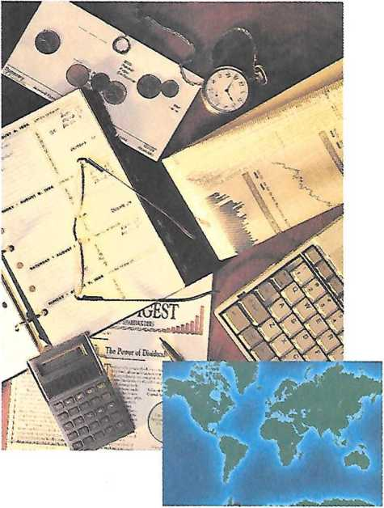
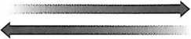
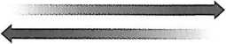
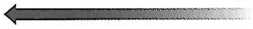
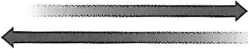
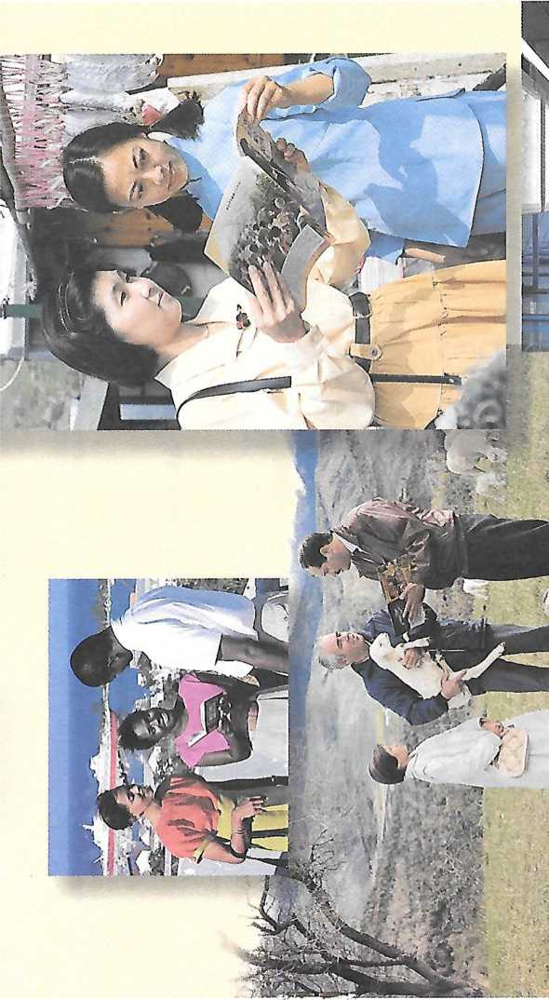
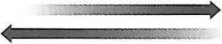
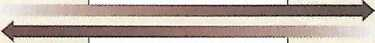
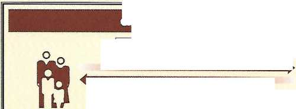

Gift of cash, securities, or property

ADVANTAGES Income tax deduction No capital gains tax on appreciated property
Septentrion
Columbia S&Mfg
;J*£,
t«o£^
to Benefit Kingdom Service Worldwide
Planned Giving
Prepared by the Office of the Secretary and Treasurer and by the Planned Giving Desk of the Watch Tower Bible and Tract Society of Pennsylvania. Inquiries may be directed to Watch Tower Society, Planned Giving Desk, 100 Watchtower Drive, Patterson, NY 12563-9204. Telephone (914) 878-7000
©1994 WATCH TOWER BIBLE AND TRACT SOCIETY OF PENNSYLVANIA. ALL RIGHTS RESERVED PUBLISHERS: WATCHTOWER BIBLE AND TRACT SOCIETY OF NEW YORK, INC.
INTERNATIONAL BIBLE STUDENTS ASSOCIATION
25 Columbia Heights, Brooklyn, NY’ 11201-2483, U.S.A.
Planned Giving to Benefit Kingdom Service Worldwide English (T-J5-E) Made in the United States of America
Gifts to Benefit the Society Now
Gifts of Money
Gifts of Securities
Gifts of Real Estate
Gifts of Other Property
Gifts of Closely Held Stock
Followed by Sale or Redemption
Conditional Donations
Planned Gifts That Will Produce Income for You
Gift Annuity
Deferred Payment Gift Annuity
Charitable Remainder Trusts
Charitable Remainder Unitrust
Income-Only Unitrust
Charitable Remainder Annuity Trust
Other Planned Gift Arrangements
Bank Accounts and Other Assets
in Trust for the Society
Gift of a Remainder Interest in a Personal Residence or Farm
Charitable Lead Trust
Gifts From Retirement Plans
How Planning Affects Estate and Inheritance Taxes
Planned Gifts Through Wills
Wills and Their Preparation
A Simple Bequest to the Society
Using a Will to Provide for the
Financial Needs of Loved Ones
Completing Your Will and Notifying the Society
Cover and page 4 world map by Nicholas Defer, 1696
8
8
9
10
10
11
Planned Gifts Through Revocable Living Trusts
Introduction to Revocable Living Trusts 28
Bequest to the Society 29
Using a Living Trust to Provide
for the Financial Needs of Loved Ones 29
Planned Gifts Utilizing Life Insurance
Naming the Society as Beneficiary 30
Replacing Donated Property
With Life Insurance 30
12
13
14
15
16
17
20
21
22
23
24
26
26
27
27
How to Secure More Information and
Answers 31
Glossary 32
—Proverbs 3:9.
ow well those words describe our support of the worldwide preaching work! People of all nations are streaming to Jehovah to receive his instruction and guidance. (Micah 4:1, 2) As a result, the number of congregations of Jehovah’s Witnesses has swelled from 46,235 in 1983 to more than 75,500 in 232 lands in 1994. Each day some 860 are baptized, and seven new congregations are formed!
Jehovah’s people respond to the needs of such rapid growth. Some 15,000 serve full-time without salary as volunteer members of Bethel families at locations worldwide, doing this so that spiritual food can be provided at a low cost. Thousands of Witnesses are missionaries, and others are special pioneers or traveling overseers. Individuals in these features of special full-time service make great sacrifices in behalf of the preaching work.
In increasing numbers, hundreds of thousands devote between 60 and 90 hours to the ministry each month as auxiliary and regular pioneers. You may be participating in this pioneer effort now, or you may have had the blessing of doing so in the past. No doubt you know some pioneers personally. Millions of God’s people who are unable to serve as pioneers devote as much time as they can to the vital work of finding sheeplike ones.
Beyond sharing directly in the preaching and teaching work, all are privileged to support it through monetary donations. Doing so is most fitting, since this Christian work needs to continue—even at an increased pace.
The success of this worldwide educational campaign leads to a growing need for Kingdom Halls and Assembly Halls as well as for new and renovated branch offices, printing facilities, and Bethel homes. Newly opening and expanding territories make this a unique and ongoing challenge. From time to time, special needs arise, such as to support relief operations when Christians suffer the results of wars, earthquakes, droughts, and storms. Christians elsewhere respond by striving for an “equalizing” of financial resources, giving so that their brothers who have less will be cared for. Never has this been more important than it is today.—2 Corinthians 8:14.
For these and other reasons, many of Jehovah’s Witnesses and others have wanted to know how they may assist financially. They have inquired of the world headquarters of the Watch Tower Bible and Tract Society of Pennsylvania, a legal entity organized to care for legal, financial, and publishing matters. Of course, many simply make outright donations to the Society. But some who genuinely want to help have hesitated out of concern that a special donation to the Society might interfere with future personal or family needs. In other cases, planning for distribution of assets at death prompts inquiries as to how a financial bequest to benefit the KingDominion service worldwide might best be accomplished.
Many have asked about the varied methods individuals or families may use that benefit the Society’s endeavors but that will also provide the donor with financial or tax benefits. Some have heard of trusts, annuities, and other methods for financial and estate planning. They may find such methods appealing, for these can be used to provide for personal and family needs while also serving a charitable function. So individuals have asked the Society how these arrangements might be used in planning a gift or a bequest that will benefit the Kingdom-preaching work.
We are, therefore, pleased to present for your consideration (as you have requested) this brochure, Planned Giving to Benefit Kingdom Service Worldwide.
The terms “planned giving” or “planned gift” imply that in arranging to contribute for the benefit of the KingDominion service worldwide, one is doing so in a way that maximizes a personal or family goal while decreasing the after-tax cost. Whatever your objectives, such a planned gift will generally include one or more of the following benefits:
o Income tax savings (through a deduction against income for the value of the gift or contribution)
• Avoidance of capital gains tax (for a contribution of certain appreciated long-term capital gain property)
• Retained-income rights for a period of time or for your life and the life of your spouse or other beneficiaries
• Possible increase in personal spendable income as a result of certain gifts
o Elimination of federal estate taxes (on the value of property passing to the Society upon a donor’s death)
• Significantly reduced estate probate costs (by utilizing certain trusts)
In this brochure we will confine our discussion to the federal tax advantages of planned giving to the Society. However, savings on state income tax and inheritance tax may also result from these arrangements.
Of course, the principal benefit to . keep in mind is that you are assisting the most important work being carried on today—the preaching of the good news about God’s Kingdom. In contrast with charities that can attempt to provide only passing benefits, the Kingdom work will lead to saving lives everlastingly. (1 Timothy 4:16) The faithful and discreet slave class, under Christ Jesus’ leadership and working through the Society, guides thirsting ones to the fountains of waters of everlasting life. (Matthew 24:45-47; Revelation 7:17; 22:1, 2) If you want to assist so that this can be accomplished more extensively, “roll your works upon Jehovah himself and your plans will be firmly established.”—Proverbs 16:3.
We would be pleased to discuss any of these arrangements with you and/or your financial advisers. You may write to Watch Tower Society, Planned Giv
ing Desk, 100 Watchtower Drive, Patterson, NY 12563-9204. Or you may telephone (914) 878-7000. We urge you to consult with your tax and legal counsel for a full discussion of the implications of any gifts or estate planning you desire to make.
The informa-tion and ex- fl amples in this 1 ■ brochure are vl hypothetical, 1 based on current law, and are for discussion purposes only. Facts and tax consequences vary from person to person. An estateplanning professional must independently determine and evaluate the tax and financial consequences of each situation.
GIFTS TO BENEFIT THE SOCIETY NOW
Gifts of Money
Outright gifts of money are the simplest and most common way to contribute to the Society. Such an unrestricted gift provides an immediate resource that the Society can use in its many theocratic endeavors. Gifts of money may be made in any amount and at any time. These should be directed to Watch Tower Bible and Tract Society of Pennsylvania, Office of the Secretary and Treasurer, 25 Columbia Heights, Brooklyn, NY 11201-2483. Please accompany such with a brief letter stating that it is being sent to the Society as a gift. All gifts, regardless of their amount, will be acknowledged in writing by the Society.
For income tax purposes, cash gifts are deductible up to 50 percent of your adjusted gross income. If you cannot deduct the entire gift in one year, you may carry the unused portion of
OUTRIGHT GIFT
Gift of cash, securities, or property
ADVANTAGES Income tax deduction No capital gains tax on appreciated property
WATCH TOWER SOCIETY the tax deduction forward for up to five years.
Gifts of Securities
Stocks and/or bonds (securities) that have increased in value make fine gifts.* There would be taxable gain if you sold such securities. But by making a gift to the Society of securities that you have held at least 12 months, you receive a double benefit:
• You avoid tax on the appreciation or profits
o You receive a charitable income tax deduction for the full fair market value of the assets when you make the gift
Gifts of securities that have increased in value (appreciated) would actually cost you less than a gift of that amount of cash, as you can see by this illustration:
Mary, who is in a 28-percent tax bracket, is trying to decide whether to donate $10,000 in cash to the Society or that value amount in stocks that have appreciated. Here is a comparative view of the effect each type of gift would have on her taxes:
* If you hold securities that have declined in value, it is generally advisable not to donate them but, rather, to sell the securities yourself to take advantage of the loss for income tax purposes and then donate those proceeds to the Society.
Gift of Cash
Amount—$ 10,000
Deduction of $10,000
income tax savings $2,800
Capital gains tax savings
None
After-tax cost of cash gift $7,200
Gift of Stock
ABCD stock now worth $10,000 but for which Mary paid $1,000
Deduction of $10,000
Income tax savings $2,800
Capital gains tax savings $2,520
After-tax cost of gift of securities $4,680
In the event you wish to give fewer than the total number of shares or bonds you hold, the Society can assist you in dividing such holdings.
Gifts of securities that have appreciated in value are deductible in an amount not to exceed 30 percent of your adjusted gross income. A gift in excess of that amount may be deducted on tax returns for up to five years.
A “special election” may be available to a person who is having a year of exceptional income that puts him in a higher-than-normal tax bracket. He may obtain the maximum tax benefit of his charitable deduction by deducting a gift of property or securities with long-term appreciation, up to 50 percent of his adjusted gross income. To use this expanded ceiling, the donor must forgo the appreciation in computing the charitable deduction; instead, he must use his original cost or other basis. Electing to do this provides the best tax results when both the appreciation is relatively small and the donor is experiencing a year of unusually high income.
If you want to make a gift of securities (stocks or bonds) to the Society, state your wish in a letter that includes a description of the property that you want to give. Mail your letter to Watch Tower Bible and Tract Society of Pennsylvania, Office of the Secretary and Treasurer, 25 Columbia Heights, Brooklyn, NY 11201-2483. The Society will reply in writing and provide information as to how the transfer can be made.
Gifts of Real Estate
A gift of real property offers benefits similar to those of a gift of securities. If you sell real estate that has appreciated in value, you normally would have to pay taxes on that gain. However, by deeding the property directly to the Society, you avoid tax on the increased value and, at the same time, receive a charitable income tax deduction for the property’s full fair market value. That value is determined by a qualified appraisal at the time of the gift. In some instances, however, prior deductions for depreciation may reduce a portion of the value of the gift.
If you wish to deed property to the Society, please write to Watch
5
2
r i *
r !
z
Tower Society, Planned Giving Desk, 100 Watchtower Drive, Patterson, NY 12563-9204. Describe the property to be given and, if possible, include an estimate of its market value. The Planned Giving Desk will respond in writing, informing you if the gift can be accepted and, if so, giving information as to how to transfer the property to the Society. Please do not deed real estate to the Society until after you have consulted with the Planned Giving Desk.
Gifts of Other Property
Jewelry, stamp or coin collections, and other tangible personal property can be given to the Society during your lifetime. In some instances gifts of such tangible personal property may be eligible for the same tax benefits as securities. However, in most cases one making such a gift will be entitled only to a tax deduction for his or her cost or other basis in that property. Mortgages and notes receivable can also be donated to the Society. If you wish to make a gift of any such property, please inform the Planned Giving Desk of the Society. Include a description of the property you wish to give. You will receive a reply as to whether the gift can be accepted and, if so, information as to how to make the transfer.
Gifts of Closely Held Stock Followed by Sale or Redemption
A shareholder in a closely held corporation who contributes a portion of his stock to the Society may claim as a charitable contribution the full fair market value of that stock. As with other appreciated securities, the donor is relieved of the potential capital gains tax on the value of the appreciation of the stock. The gift is deductible in an amount not to exceed 30 percent of his adjusted gross income. Any amount in excess of 30 percent may be deducted on tax returns for up to five years.
An alternative is available to a donor who does not wish to give up control of the corporation. He may initially make an outright gift to the Society of a portion of his closely held stock. At a later date, the closely held corporation could purchase the stock from the Society for cash. As long as the Society is not obligated to sell the stock to the corporation, the transaction will produce no adverse tax results. To illustrate:
Richard is a shareholder in a closely held corporation, and the corporation’s fair market value is $1,000,000. There are 1,000 outstanding shares worth $1,000 each. Richard is in a 36-percent tax bracket and wishes to contribute $10,000 to the Society.
OPTION 1: The corporation has the cash to make the gift. (Since Richard wishes to take advantage of the charitable deduction on his personal income tax return, he does not choose this option.)
Option 2: Richard may sell some of his stock to his corporation for cash. (The proceeds of this redemption would be treated as a taxable dividend to him. Since the tax on the dividend would erode some of the tax benefits of the gift to the Society, Richard decides against this option.)
OPTION 3: Richard may contribute ten shares of stock to the Society. (This will provide him with a charitable deduction of $10,000, and there will be no capital gains tax on any appreciation. Another advantage is that the gift to the Society allows Richard to have the benefit of an income tax savings. At a later time, the corporation may agree to purchase the stock, and the Society may agree to sell it, for $10,000.1)
Conditional Donations
You may give money to the Society under a special arrangement in which, should you have personal need, the
CONDITIONAL DONATION
Gif? of cash, securities, or property
Potential return of a portion or all of gift
ADVAMTAGE
Can request return of funds
DISADVANTAGE
No income tax deduction allowed
money may be returned to you. This arrangement meets the wishes of many people. Upon request, the Society will gladly send more information regarding this conditional donation arrangement.
Stocks, bonds, and other securities may also be given to the Society during your lifetime under special provisions so that if you, or a designated beneficiary (such as your spouse), have a financial need and make a written request, the property may be returned to you. The Society thus holds title to the property. This arrangement ensures that in the event of the deaths of you and any designated beneficiary, the expense, time, and uncertainties of probate are avoided.
Since in making this arrangement you may request the return of the money or the property, no charitable income tax deduction is allowed. If you are interested in making such a conditional donation, please write to the Office of the Secretary and Treasurer, describing your contemplated gift and inquiring as to how to proceed.
PLANNED GIFTS THAT WILL PRODUCE INCOME YOU
Gift Annuity
A gift annuity is a simple contract between you and the Society that allows one or more individuals to receive a guaranteed income for life. To establish such a gift annuity, you donate cash or securities, and in turn, the Society promises to pay the annuitant (either you or someone you designate ) a predetermined amount in periodic installments for life.
The Society designates rates paid according to the circumstances of the one who makes the gift annuity. The rate, based on age and other factors, is designed to result in an ultimate gift to the Society of about 50 percent of the value of the transfer. Although these rates are conservative, the real return is quite reasonable because of the resulting deductions. The donor receives an income tax deduction for the year the annuity is funded. Thereafter, for the duration of his life, he receives a portion of each payment tax-free. Note how these tax benefits increase the yield:
Carmen, aged 70, puts $10,000 into a gift annuity that pays her $780 each year. The gift provides her with an income tax deduction of $4,526, which, in her 28-percent income tax bracket, saves her $1,267 (28 percent of $4,526). Thus, her cost for the annuity is $8,733, and the $780 income is a return of 8.9 percent.
Part of the annual income Carmen receives from the annuity is tax free ($344 of the $780 is not taxed), so the amount she receives annually is the equivalent of $914 of taxable income. Viewed against her out-of-pocket cost ($8,733), this represents a yield of over 10 percent.
When is a gift annuity appropriate? It is important to understand that legally once the initial gift of money or marketable securities is made, it cannot be returned, nor can the amount of the payment be changed. Thus, no one should consider making an irrevocable gift of such assets to the Society if there is any real possibility that he will need the money or property at a later time. But a gift annuity may be quite appropriate for those who can afford to part with the principal if they are assured of fixed payments for life.
A gift annuity is more appropriate for those who are older. A younger person may want to consider alternatives, such as a deferred payment gift annuity.
Deferred Payment Gift Annuity
A deferred payment gift annuity can function as part of retirement planning. In this arrangement annuity payments do not begin until a future date of the donor’s choice. Such deferment of annuity payments results in (1) a higher payout once the annuity pay-
GIFT ANNUITY
Gift of cosh or securities
Fixed income each year
ADVANTAGES
Annual income for life Immediate tax deduction Capital gain deferred
ments begin and (2) a significantly larger income tax deduction in the year the annuity is established. Thus, the deferred payment gift annuity is particularly suited to a younger person who would like an immediate tax deduction but who does not currently need income from the gift annuity. The guaranteed annual income can be set for the anticipated year of retirement, as this example shows:
Robert, aged 42, owns stock that has greatly increased in value but pays no dividend. He decides to transfer to the Society stock presently worth $25,-000 for which he paid $3,000 some years ago, resulting in a capital gain of $22,000. He will begin to receive income from the annuity when he turns 65. He is the initial annuitant, and his wife, aged 40, is the survivor annuitant. Robert may take $17,173 as an immediate income tax charitable deduction—over 68 percent of the total gift. When Robert reaches the age of 65, the Society will annually pay him (and subsequently his wife) an annuity of $5,650, which represents a 22.6-percent return on his S25,000 gift. Only $6,887 of the $22,000 capital gain is deemed taxable, and no capital gains tax is due until the annuity payments begin. Even then, the total reportable gain is “passed through” the annual annuity payments in installments and is thus spread over the life of those payments.
In summary, the gift annuity and the deferred payment gift annuity can offer these financial and tax benefits:
1) A guaranteed annual income for one or more lives, payable periodically
2) Loved ones can be given lifetime financial protection
3) An immediate income tax savings because a portion of the gift can be deducted as a charitable deduction
4) A portion of all the annuity payments will be free of income taxes
5) Securities that have appreciated in value may be given for a gift annuity without incurring any immediate capital gains tax on the appreciation
6) Probate costs and estate or inheritance taxes may be minimized or avoided
7) Tax-deductible gifts may be made to a tax-sheltered fund during higher income years to provide a favorably taxed income after retirement
Charitable Remainder Trusts
A charitable remainder trust is similar to a gift annuity in that both allow a contribution to the Society while providing an income to you and/or another. However, a charitable remainder trust is an individually managed trust. It may offer greater flexibility than a gift annuity in that it may be set up for a specified period of years and may name more than two beneficiaries. There is also more flexibility in the type of property that may be donated. For example, real estate may be held by the trust. Tax-exempt bonds may also be used to provide tax-free income.
In establishing a charitable remainder trust, you make an irrevocable contribution of cash or other property to the trust. The trustee invests the assets and manages the trust as a separate account. In certain situations you may be the trustee, but generally the trustee is another individual or institution. The trust pays the income beneficiary, which may be you or some loved one, an income for life or for a set term of years. If a fixed term is used, it may not exceed 20 years. Upon the death of the last income beneficiary or the expiration of the designated fixed term, the trust principal is distributed to the Society.
The financial and tax benefits of charitable remainder trusts are similar to those of charitable gift annuities. An immediate income tax charitable deduction is available in the amount of the current value of what the Society will receive when the trust terminates. The amount is determined by reference to U.S. Treasury tables that consider the annual payout rate and the age of each life income beneficiary. So the older the beneficiary and the lower the rate of payout, the larger is the allowable tax deduction. There are two types of charitable remainder trusts, the major difference being the manner in which the income payments are determined.
Charitable Remainder Unitrust
The charitable remainder unitrust provides the income beneficiaries a payout rate that is a percentage of the value of the assets in the trust, which are revalued each year. You and the Society determine this rate of payout at the time you make the gift. By law the rate of payout must be at least 5 percent. The payout percentage does not change, but income from the trust will vary as the value of the trust principal changes. An advantage of the unitrust arrangement is that your income from the trust can increase as the principal grows, thus providing a hedge against inflation. The following example shows why this may be significant:
A $100,000 certificate of deposit with an interest rate of 5 percent would pay you $5,000 each year for its entire term, after which you would have $100,000 in principal to reinvest. However, because of inflation, the
Varied income, 5% or more of trust as valued each year
Gift of cash or property
CHARITABLE REMAINDER UNITRUST
TRUST
Trustee: Individual/ institution/ or the Society
ADVANTAGES
Annual income Immediate income tax deduction No capital gains tax DISADVANTAGES Professional help needed to create trust document Potential annual trustee fees $100,000 will actually have less purchasing power than it does now.
At death, remainder payable to Watch Tower
If, though, you funded a charitable remainder unitrust with $100,000 at a 5-percent payout rate, it would pay you 5 percent of the trust assets valued each year. If the value increases, so will your income. Conversely, if the trust value decreases, the income will decline proportionately. If the trust assets are invested in equities, and if the trust over a period of time has an annual return of 11 percent (the historical average for equities), it will grow by a net 6 percent annually after the 5-percent payout. In that case your income would double in 12 years, as would the value of the principal. You would benefit by receiving a higher income, and the Society would receive a larger remainder portion of the trust.
As with other methods of deferred giving, a charitable remainder unitrust offers appealing financial and taxable benefits when funded with low yielding, highly appreciated property such as securities or real estate. Notice why in this example:
Stephen, aged 72, owns stock now selling for $53 a share and yielding 1.8 percent. His cost or other tax basis in the stock is only $1.50 a share. He decides to give 5,000 shares (now worth $265,000) to the Society through a charitable remainder unitrust. This trust will pay him 6 percent for life and then (if he dies first) 6 percent to his wife, aged 68, for life.
The immediate effect of Stephen’s gift is that his current annual income from those shares more than triples, from S4,770 to $15,900. He is entitled to a charitable deduction equal to 38.3 percent of the gift, or $101,572. Because he donated appreciated property, he may claim this deduction in an amount up to 30 percent of his adjusted gross income in the year he makes the gift; the excess may be carried forward up to five years. Additionally, Stephen does not have to pay capital gains tax on the appreciated value of the shares.
Income-©nlly Unitrust
A special form of unitrust (an income-only unitrust with a make-up provision) can provide a reasonable retirement income for a donor and designated beneficiaries, as well as substantial and immediate tax savings. This example shows why:
Todd owns property that has increased in value over the seven years he has owned it. He is in a 31-percent income tax bracket. He wants to sell the property in a way that will defer income and capital gains taxes for about ten years. The property is currently worth $240,000; if he sells it, the capital gains tax will be almost $45,000. Todd realizes that by transferring that property into a charitable remainder trust and having the trust sell the property, he will have no capital gains tax. The trustee may administer the trust in such a way that the receipt of income may be deferred for as many years as Todd wishes.
Although every unitrust agreement must provide for the annual distribution to the beneficiary (or beneficiaries) of at least 5 percent of the value of the trust assets in that year, Todd’s trust is set up so that only income can be used to make this annual payment. The trustee invests the proceeds from the sale of his property in such a way that growth is achieved, though no income is produced. Hence, no annual payments are made to Todd.
Years later, when Todd is ready to receive an income, the trustee can change to high-income investments and, for the rest of Todd’s life, pay him the lesser of the specified percentage of the value (at that time) of the trust assets or income. The trust could also provide that at Todd’s death the payments would continue to his wife for her lifetime. At the death of both, the principal of the trust would be distributed to the Society.
If that tax-sheltered trust grew at an 8-percent annual rate, in ten years (when Todd chose to receive income) it would be worth $518,000, and the annual payments would be based on that value. Todd would annually receive $25,900 from a 5-percent unitrust, $31,080 from a 6-percent unitrust, $32,260 from a 7-percent unitrust, or $41,440 from an 8-percent unitrust. The unitrust could have a make-up provision that would provide that whenever the specified percentage of value was not paid in prior year(s) because of the income limitation, the resulting deficit would be made up in subsequent year(s) in which income exceeded the specified percentage of value. This would provide greater income payments in retirement years. Another benefit is that Todd now may take an immediate tax deduction that will produce tax savings of approximately $16,000. Additionally, by selling appreciated property within the trust, there will be no capital gains tax.
Added contributions may be made to charitable remainder unitrusts at any time. This makes unitrusts excellent vehicles for retirement planning.
Charitable Remainder Annuity Trust
The second type of charitable remainder trust is the charitable remainder annuity trust. The primary difference between the annuity trust and the unitrust is that the annuity trust’s payout is fixed. It is a percentage (not less than 5 percent) of the initial fair market value of the assets placed in the trust. Once the payout for the trust is set, it will remain constant for the duration of the trust. Those establishing such trusts are usually more concerned with the security of a constant return than with the long-term growth potential of the unitrust.
The financial and tax benefits of the charitable remainder annuity trust are similar to those explained under the headings “Gift Annuity” and “Charitable Remainder Unitrust,” as can be noted in this example:
Karl and Carol, both 65, have stock that they bought years ago for $10,-000 but that through appreciation is now worth $100,000; it yields only 2 percent (or $2,000) a year. They establish a charitable remainder annuity trust that will pay them an $8,000 annuity (8 percent of the trust assets as
CHARITABLE REMAINDER ANNUITY TRUST
Fixed income, 5% or more of trust when established
Gift of cash or property
TRUST
I
Trustee: Individual, institution, or the Society
ADVANTAGES
Annual income Immediate income tax deduction No capital gains tax
DISADVANTAGES
Professional help needed to create trust document
Potential annual trustee fees valued when the trust was created) for the rest of their lives. They receive an income tax charitable deduction of $30,753, a tax savings of $8,611 in their 28-percent tax bracket, and there is no capital gains tax on the $90,000 of appreciation in the value of the stock. If the $8,611 tax savings were invested earning 8 percent, this could be viewed as an addition to the income resulting from the establishment of the trust. The payout from the trust and the investment of the tax savings would total $8,689. This would be more than four times the yield of S2.000 that Karl and Carol would have had from the stock.
*
At death, remainder payable to Watch Tower
Additional contributions may not be added to a charitable remainder annuity trust. If an additional trust gift is later desired, a new trust would have to be set up for it.
The caution mentioned under gift annuities is equally applicable to gifts through a charitable remainder trust. The law requires that once a contribution to the trust is made, it cannot be returned. Thus, you should not make an irrevocable gift of such assets to the Society if there is any real possibility that you will later need the money or property.
11 u
h- &
a § o o ai ii siiasii
Till III Jiffini
<
immij S;gaiiiw
^LAMtNlEE) GB AMAMGEMEXTS
Bank Accounts and Other Assets in Trust for the Society
Frequently people have money that they would like the Society to have when they die, but they want to retain ownership and income interest for personal needs that might arise while they live. To accomplish this, they have put these funds in savings banks or savings and loan associations in accounts that are in their names but that are “in trust for Watch Tower Bible and Tract Society of Pennsylvania.” This arrangement is legally referred to as a “Totten trust” and can be made in some states and with some banks, but regulations vary.
To set up such an arrangement, you should first discuss it with an officer of your bank (or savings and loan association) to be sure that this is possible. Your social security number ought to appear on the account, and all interest or dividends during your lifetime will be yours. You will have complete ownership and control of the account while you live, but at death any funds left in the ac
count will pass directly to the Society. One advantage of this is that it avoids the time delays and uncertainties typical of probate.
If you establish such an arrangement, please write a letter to the Planned Giving Desk stat-
ing that the account has been set up, indicating its title, the name and address of the bank (or savings and loan association), and the account number. This information will be held by the Society for future reference.
In most states you may make similar arrangements regarding stocks, bonds, mutual funds, certificates of deposit, and other titled investments or accounts. Some states allow you to designate a beneficiary to such assets in much the same way as you designate a beneficiary to a life insurance policy. These designations are often referred to as “pay on death” directions or “transfer on death” directions. If you make such an arrangement, please notify the Society as outlined in the previous paragraph.
None of these arrangements produce a charitable deduction for income tax purposes, because there is no current gift to the Society. You remain the owner of the account or asset and may do with it as you please during your lifetime. When the account or asset transfers to the Society at your death, that gift is deductible for estate and inheritance tax purposes.
Gift of a Remainder Interest m a Personal Residence or Farm
You may transfer ownership of your personal residence or farm to the Society, though you and your spouse continue to use it for the rest of your lives. You continue to use and maintain the property just as if you had not donated it, but the Society will take full title at the death of you and your spouse. Such an arrangement is generally known as a retained life tenancy or life estate.
Although you continue to use and maintain the property as long as you live, you are allowed an income tax charitable deduction (based upon your age and the fair market value of the property) for the value of the future interest that you convey to the Society. This avoids the additional time and expense of probate. To illustrate:
Instead of leaving her home (having an appraised value of $247,000) to the Society in her will, Marie, aged 75, decides to deed it now and retain a life estate in her home for herself. After having the property appraised, she and the Society sign a simple agreement that she may live in the house for the rest of her life and be responsible for taxes, maintenance, and insurance. Because of her age, IRS regulations entitle Marie to an income tax charitable deduction that is 43 percent of the appraised value of her home, which amounts to a deduction of $106,214. If she is unable to use the entire deduction in the year of the gift, she has five years to do so. At her death, the Society receives full title to the home.
If you wish to contribute your personal residence or farm in this manner, it is important that the Society be consulted before you take the step. Write to the Planned Giving Desk stating your desires and giving a description of the property along with its approximate value. The Society will then write to tell you whether the gift can be accepted, providing information on how to proceed.
Charitable Lead Trust
A charitable lead trust is the reverse of the charitable remainder trust; it provides for a gift to the Society of an income interest from property for a term of any duration. After the specified term, the property either reverts to
Gift of closely held stock or other appreciated securities
ADVANTAGE
Removal of appreciating property from donor's estate
DISADVANTAGES
Professional help needed to create trust document
Potential annual trustee fees
CHARITABLE LEAD TRUST
At death (or term), remainder to children
Trustee: Individual, institution, or the Society you, as donor, or passes to a nonchar-itable beneficiary designated by you.
Income for a term of years
The income interest for the Society must be in the form of an annuity or a fixed percentage of the value of the trust property determined annually.
As donor, you are not entitled to a charitable deduction for federal income tax purposes when you create a charitable lead trust, unless you remain taxable on the trust income. However, for certain individuals, the opportunity to obtain a federal income tax deduction in the year of the establishment of the trust outweighs the disadvantages of being taxed on the trust’s income in later years. If you fund the trust with tax-exempt securities, you will have no negative tax consequences.
If you want property to be transferred eventually to family beneficiaries at a low transfer cost, a charitable lead trust can be beneficial. It is particularly suitable when the property has the potential of appreciating considerably. Of course, a charitable lead trust is practical only if your family can forgo income from the transferred property while the Society is receiving payments from the trust. You may establish a charitable lead trust either during your life or by a provision in your will. To illustrate:
Allen creates a charitable lead trust and funds it with income-producing real estate currently valued at $250,-000. He directs that the trust is to pay the Society $20,000 annually for 15 years, at which point the assets of the trust are to be distributed to his children. According to tables issued by the IRS, the income interest of the Society in the trust is valued at about $155,800, and the children’s remainder interest at $94,200. Note: Allen cannot deduct the Society’s income interest on his income tax return.
Assume that at Allen’s death the trust assets have increased in value to $500,000. Still, for purposes of determining his estate and gift tax liability, only the value of the gift to the children at the time the trust was created ($94,200) may be taxable. The balance ($405,800) will not incur any estate or gift tax. If Allen had not set up the charitable lead trust to benefit the Society, the entire $500,000 would have to be taxed in his estate.
Charitable lead trusts fit only certain circumstances. When considering a charitable lead trust, you should always compare the effects of a lead trust with the effects of simply holding on to your assets and contributing the income from them each year. You may find that there are benefits in doing the latter.
Gifts From Retirement Plans
A retirement account is often the most significant portion of one’s assets. Typically, that account will provide a husband and wife with a cash flow for as long as they both live. In the case of large retirement accounts, at the death of the survivor the combination of the income and estate tax laws could cause as much as 75 percent of the account to be taken up in taxes.
If you wish to contribute to the Society after the deaths of you and your spouse, you could provide that at your death your spouse will receive the payments from the account for life and provide that the assets remaining in the account at your spouse’s death pass to the Society. It is possible, then, that the income that was earned and accumulated in the account will never be taxed, nor will the assets be subject to estate tax.
TOW EnAGWTO AEFECTS ESTATE AMID BWMTAMCE TAXES
The Internal Revenue Code allows you to pass an unlimited amount of assets to your spouse and/or the Society free of estate tax. Assets passing to noncharitable beneficiaries (other than your spouse) are taxable when they exceed $600,000.
Federal estate tax rates range from 37 to 55 percent and are based not just upon assets passing through probate but upon the market value of all assets that you own at the time of your death. This is so regardless of whether they are transferred by will, trust, joint tenancy, or other arrangements. Such assets may include stocks, bonds, bank accounts, real estate, insurance proceeds, and the like.
Property left to your surviving spouse, while escaping estate tax at your death, may face substantial tax later if your spouse’s estate then exceeds $600,000 that is distributed to noncharitable beneficiaries. Tax laws allow for numerous ways to eliminate or minimize tax in this situation, but the key is to create a plan while you both are living. If your plan for providing for the needs of your surviving spouse includes the desire to benefit the Society, several possibilities arise.
You could create (in a will or in a living trust) a charitable remainder trust to go into effect at your death and have the only noncharitable beneficiary be your spouse. By so doing, your estate will be allowed a marital deduction for the value of your spouse’s income interest and a charitable deduction for the value of the Society’s remainder interest. Thus, no federal estate tax will be imposed. Here is an example:
Martin has a taxable estate valued at SI,000,000. His will directs that his wife be left $600,000 and that $400,-000 be placed into a charitable remainder unitrust that will pay his wife 7 percent of the annual value of the trust. Upon the death of Martin’s wife, the trust principal will pass to the Society. As a result of this arrangement, Martin’s estate will be allowed an estate tax marital deduction not only on the $600,000 passing directly to his wife but also on the value of his wife’s income interest in the charitable remainder trust. His estate is additionally allowed a charitable deduction for the value of the Society’s remainder interest. Thus, there are no federal estate taxes due as a result of Martin’s death. At the death of Martin’s wife, the full value of the unitrust will pass to the Society free of federal estate tax. Also, she is able to distribute up to $600,000 of her own assets free of estate tax to whomever she pleases, including the Society.
Martin’s wife not only received a substantial outright bequest but also received a steady flow of income for her needs. You may want to minimize taxes and yet give your surviving spouse the security of being able to use more than income from a trust, should this be necessary The flexibility to provide for the needs of a surviving spouse while maintaining control over the eventual disposition of assets is given by what is known as a Q-TIP (Qualified Terminable Interest Property) trust.
Under a Q£TIP trust, as long as your surviving spouse receives a qualifying income interest in the property and your executor elects such treatment, the trust will qualify for the marital deduction. In addition to paying the income to your surviving spouse, the trustee may be given the power to invade the trust principal for your spouse’s benefit (an option not available with either an annuity trust or a unitrust). For example:
William has an estate of $1,200,000. He wants to provide for his wife, but he also wants to be sure that some assets remaining at her death benefit the Society. After consulting with his attorney, William includes in his will specific bequests for his wife and children and directs that an additional $250,000 be put in a Q^TIP trust. His wife will receive all the income from the trust for life, as well as the right to draw on the principal in any amount she needs for health reasons or to maintain her standard of living. The value of the trust at her death will pass to the Society.
RESULT: William’s estate receives a marital deduction for the entire value of the trust, thus eliminating at his death any estate tax attributable to that property. The amount remaining, if any, at his wife’s death will qualify for the charitable deduction and pass free of estate tax at that time.
The Q^TIP trust has enormous potential for creating peace of mind in knowing that sufficient assets will be available to meet the potential needs of a surviving spouse. In the event that invasion does not totally consume trust principal, this arrangement allows for flexibility while at the same time making binding provisions for the Society.
Lowering your gross estate by making deductible gifts or bequests to the Society is only one way to minimize or eliminate federal estate taxes. Estateplanning professionals can review available options for your particular situation, so you can choose what is best for you and your loved ones. In addition to considering federal estate taxes, you should discuss with your adviser any inheritance or death taxes that may be levied in your state.
PLANNED GIFTS THROUGH WELLS
Wills and Their Preparation
A will may be a key step in assuring that your estate will be distributed according to your wishes. In the absence of a valid will, the laws of your state —rather than you—determine who receives what. That determination may not coincide with your plans or the needs of individuals and institutions about whom you care.
A will directs the distribution of assets that are titled in your name alone or in which you have a divisible interest. Even if you have arranged for the distribution of your assets by titling (joint ownership), by beneficiary designation (“in trust for” or “pay on death”), or by a living trust, it is wise to have a will. In it you can outline your wishes in the event a joint owner or named beneficiary dies before you do or in the event you fail to arrange for the distribution of a certain asset by title, trust, or beneficiary designation.
If you have minor children, your will can recommend a guardian for them, while clearly stating your wishes as to their religious training.
If you desire to prepare a will, you ought to see a qualified attorney in your state. Prior to doing so, determine whom you want named as the executor (also called the personal representative and the substitute executor. You should select a person or institution you trust to wind up your affairs, collect assets, pay legal debts and taxes, and follow your instructions in your will.
Normally gifts made to the Society through a will are deductible for estate and inheritance tax purposes, and normally there are no limitations as to the amounts or property that can be given to the Society. However, it would be wise for you to discuss these matters with your attorney. You will need to be assured that these things may be done under the laws of the state in which you live. You should discuss in advance with your attorney what the fees will be for preparing the will.
A Simple Bequest to the Society
The most useful bequest is an unrestricted bequest for the general purposes of the Society. The following language is suggested:
I give [the sum of dollars,
all of the residuary of my estate, or____percent of the residuary of my
estate} to the WATCH TOWER BIBLE AND TRACT SOCIETY OF PENNSYLVANIA, an organization described in §501(c)(3) of the Internal Revenue Code of 1986, with office and principal place of business at 25 Columbia Heights, Brooklyn, NY 11201-2483.
Your attorney can contact the Planned Giving Desk at (914) 878-7000 if questions arise.
Using a Will to Provide for the
Financial Needs of Loved Ones
Arranging for the financial needs of others after your death may be accomplished by use of a trust that comes into being only at your death and is contained in your will. This is referred to as a testamentary trust. Such a trust can be drafted to fit the needs and circumstances of your beneficiaries, but it does not avoid the time and expense of probate.
Charitable remainder unitrusts and charitable remainder annuity trusts may be included in wills as testamentary trusts. Properly drafted, they allow your estate to claim a charitable deduction from estate and inheritance taxes. However, since they do not come into existence until your death, there are no deductions from your income tax.
Completing Your Will and Notifying the Society
Your attorney should be equipped to guide you in the execution and witnessing of your will. If there is any question of your ability to make a will and sign it, it may be appropriate to have your attorney obtain a signed statement from at least one physician attesting to your competency. This will greatly diminish the likelihood of a successful attempt to contest the will. Your attorney could also prepare an affidavit attesting to your competency.
You may want to have a provision in your will that waives any bond that otherwise might be required of the executor. A bond is sometimes difficult to obtain, and it results in added costs.
Keep the original of your will in a safe place. If your will makes the Society a beneficiary, you may send the original to the Planned Giving Desk. If you keep the original, please notify the Society and the executor where you will keep it, and send a copy to the Society. Whether the Society has the original or a copy, you may revoke or amend your will at any time. Please notify the Society of any change to your will.
You may also want to file with the Society a list of names and addresses of your relatives and a general list of your property and its location. This will save time and expense that otherwise would have to be borne by your estate.
GOTO THROUGH REVOCABLE LMNG TRUSTS
[Introduction to
Revocable Living Trusts
Revocable living trusts have been in existence for many years. Under such a written instrument, you transfer ownership of property to a trustee (individual or institution) for the benefit of one or more named beneficiaries. In most states, but not all, you may name yourself as both beneficiary and trustee of a living trust. If you do, you should name a successor trustee who will take over and manage the trust property if you should become incapacitated. If you die, the successor trustee will also distribute the income and principal according to your instructions.
In addition to providing for the management of your trust assets in the event of your disability, a living trust avoids probate for the property that was transferred into the trust during your lifetime. Probate is the court process by which, at your death, assets that are titled in your name alone are transferred to your beneficiaries. Since assets that were transferred into the living trust are legally owned by the trust, they are not subject to probate, and they pass to your beneficiaries with a minimum of time and expense.
Trust agreements are complex legal documents. If you are considering the use of a revocable living trust, you should discuss the matter with a qualified attorney. Since it is a document created for you, make sure that the attorney preparing it is very familiar with your wishes, your family, and your property. The trust controls only assets that are inside it.
Thus, if you establish a trust, it is important that property is correctly transferred into it. You may amend or revoke a living trust at any time before your death.
The appropriateness for you of a revocable living trust will depend upon a number of things, including the property that you own, your health and family situation, and the availability of a successor trustee. It is important that you discuss these things with an attorney qualified in estate planning. Normally the cost of establishing a revocable living trust will be substantially more than that of preparing only a will. Nonetheless, because probate may be avoided, long-term costs and the expenditure of time can be reduced substantially. However, some states have streamlined the probate process by simplifying the procedures, thus reducing the time and expense. You should discuss with an attorney in your state the relative costs of a plan utilizing a living trust compared with one featuring only a will.
Bequest to the Society
A living trust contains directions to the trustee or successor trustee on what to do with assets titled in the name of the trust at your death. The following is a simple direction to benefit the Society at your death:
The trustee shall distribute [the sum of___dollars, all of the residuary of the trust estate, or____percent
of the residuary of the trust estate} to the WATCH TOWER BIBLE AND TRACT SOCIETY OF PENNSYLVANIA, an organization described in §501(c>)(3') of the Internal Revenue Code of 1986, with office and principal place of business at 25 Columbia Heights, Brooklyn, NY 11201-2483.
If you name the Society as beneficiary in the trust, please mail a copy of the trust to the Planned Giving Desk, and we will retain it in our files. It would also be helpful to have information about property that is ultimately to be distributed to the Society, as well as any amendments to the living trust that you make at a later time.
Using a Living Trust to Provide tor the Financial! Meeds of Loved ©nes
As in the case of a testamentary trust, a revocable living trust may also provide for the financial needs of your loved ones. In addition, charitable remainder unitrusts and charitable remainder annuity trusts may be included in both.
PLANNED GIFTS TO LIFE NN SUMA EWE
Naming the Society as [Beneficiary
You may name the Society as the sole beneficiary or as a partial beneficiary of a life insurance policy. Any proceeds payable to the Society at death may be deducted from estate and inheritance taxes. For example:
Howard owns a $250,000 life insurance policy on his life. He purchased the policy when his children were infants. Now that they are older, he signs a change of beneficiary form furnished by his insurance company to provide that $50,000 in proceeds will be paid to the Society upon his death. The remaining $200,000 is to be paid to his children in equal shares. The full amount of his life insurance is included in his gross estate for tax purposes. However, $50,000 is fully deductible as a charitable deduction from estate and inheritance taxes.
If you desire to name the Society as the sole or partial beneficiary of insurance, you, as the owner of the policy, must direct your insurance agent or the insurance company to designate the new beneficiary as: WATCH TOWER BIBLE AND TRACT SOCIETY OF PENNSYLVANIA, an organization described in §501(c)(3) of the Internal Revenue Code of 1986, with office and principal place of business at 25 Columbia Heights, Brooklyn, NY 11201-2483.
Many of the benefits obtained by using life insurance policies to provide bequests to the Society may also be achieved by the use of an annuity policy provided by insurance companies. When you name the Society as beneficiary of either a life insurance policy or an annuity policy, please inform the Society. If you wish, after the Society has been designated as beneficiary of either policy, you may send the policy to the Planned Giving Desk for safekeeping.
Replacing Donated
Property With Life insurance
Assets that have been donated to the Society outright or used to fund life income arrangements may be replaced by life insurance. The income tax savings from your gift are often sufficient to cover the cost of the replacement insurance. It is even possible to arrange for those insurance proceeds to be paid to your heirs without incurring estate or inheritance taxes.
An irrevocable life insurance trust is a way to remove life insurance proceeds from your taxable estate. When that trust, and not you, owns the policy on your life, the proceeds of the policy are not subject to estate or inheritance tax. (However, if you transfer an existing policy into a trust, three years must pass before the transfer escapes estate or inheritance tax.)
This type of trust must be irrevocable. The rules for establishing and administering such trusts are complex and certainly require the attention of an attorney specializing in estate planning. Yet, the benefits of an irrevocable life insurance trust can be substantial and worth the effort if established and administered correctly.
HOW TO SECURE MORE INFORMATION AND ANSWERS
We understand that questions may remain, and we welcome your telephone calls or letters. We would be pleased to work
with your advisers to accomplish your gift and
estate-planning objectives, as you desire to benefit the King
Dominion service now being carried out worldwide to Jehovah’s praise.
Glossary
annuitant
The recipient of an annuity.
annuity
A sum of money payable yearly or at regular intervals. Also, a contract or agreement providing for the payment of an annuity.
appreciated property
Property that has increased in value.
basis
Generally, the amount representing the original cost used in calculating gain or loss upon the sale of an asset.
bequest
A gift by will, especially of money or personal property. As used herein, it also includes a gift by living trust.
bond
A sum to be posted either in cash or through a bonding company to ensure performance by the legal representative of an estate, whether executor, administrator, or trustee. Also, a security evidencing indebtedness to the holder that usually provides for the payment of interest at regular intervals.
capital gains tax
Tax imposed upon the gain from the sale of an asset such as securities or other investments.
charitable lead trust
A trust for a fixed term of years in which a charity is the income beneficiary and the remainder goes to a noncharitable beneficiary, charitable remainder annuity trust A charitable remainder trust in which the specified distribution is a certain sum that is not less than 5 percent of the initial fair market value of all assets placed in trust, charitable remainder trust
A trust that provides for a distribution, at least annually, to one or more beneficiaries, at least one of which is not a charity, for life or for a term of years, with an irrevocable remainder interest to a qualified charity.
charitable remainder unitrust
A charitable remainder trust in which the distribution is a fixed percentage that is not less than 5 percent of the net fair market value of the trust assets determined annually.
closely held corporation
Generally, a corporation with relatively few shareholders. The Internal Revenue Service assumes that individual shareholders can influence the activities of such a corporation.
deed
A document whereby ownership of real estate is transferred from one owner to another.
estate tax
A tax based upon the value cf property and interests in proper?;.’ transferred as a result of death. Generally, the value of such property must be in excess c. Self, j?l after allowable deductions.
executor
The person named :n a wflcarry out its provisions.
gift annuity
An arrangement where a donor transfers money or securities to a quabned charity in exchange for the ^barrr. 's commitment to pay the doner (and or persens designated by the donor) a specmed annuity every' year for the life of the doner and or the lives of the designated beneficiaries .
grantor
One transferring property to a trust.
guardian
One who has the care cf the person or property of another.
irrevocable
Cannot be altered cr revoked.
life estate (or, retained life tenancy) An interest in the income from or use of property for one’s life.
living trust
Generally, a trust that is established to operate during the lifetime of the grantor. Also referred to as an inter vivos trust.
marital deduction
The portion of a decedent’s estate that may be given to the surviving spouse without its becoming subject to the federal estate tax levied against the decedent’s estate.
mortgage
An instrument by which the borrower gives the lender a lien on property, commonly real property, as security for the payment of an obligation. The borrower continues to use the property, and when the obligation is fully extinguished, the lien is removed.
mutual fund
A regulated investment company holding a portfolio of stocks, bonds, or other securities and managed by a professional investment adviser. Investors participate in the portfolio by purchasing shares in the company.
probate
The system whereby' a court takes authority over the assets of the estate of a deceased individual, determines the validity of a will, if any, and appoints a legal representative, such as an executor, to manage the affairs under the jurisdiction of the court.
Qualified Terminable Interest Property (Q-TIP)
A type of interest in property passed from one spouse to the other, which qualifies for an estate tax marital deduction only (1) if the surviving spouse will receive the income from the property, payable annually, for the duration of his or her life and (2) if no person has the power to appoint the property to anyone other than the surviving spouse.
redemption
A repurchase, a buying back.
revocable
Capable of being altered or revoked.
securities
Evidences of debt or ownership (as a stock certificate or a bond).
testamentary trust
A trust established by one’s will, which takes effect after death.
Totten trust
A trust created by deposit of one’s money in his own name as trustee for another. Title is vested in the record owner (trustee), who during his life holds it as a revocable trust for the named beneficiary. At the death of the depositor, a presumption arises that the balance of funds passes to the beneficiary.
trust
Relationship of confidence or trust in which one assumes an obligation to hold and manage property for the benefit of another.
trustee
One who receives and is responsible for managing the property in a trust.
will
A legally enforceable declaration of a person’s wishes regarding matters to be attended to after his or her death and inoperative until his or her death. A will usually relates to the individual’s property, is revocable or amendable up to the time of the individual’s death, and is applicable to the situation that exists at the time of his or her death.
Annuity
defined, 32
gift See Gift annuity.
policy, 30
Bank account, 20-1
Capital gains tax
defined, 32
reduced, avoided, or deferred by use of charitable remainder annuity trust, 18 charitable remainder unitrust, 15-16 gift annuity, 13-14
gift of appreciated property, 9 gift of appreciated securities, 8-9 income-only unitrust, 16-17
Cash contributions
compared with gift of securities, 9 tax benefits to donor, 8-9
Charitable lead trust
defined, 32
difference between charitable remainder trusts and, 22
income interest in, 22-3
practical application for, 22-3
Charitable remainder annuity trust additional contributions prohibited, 18 defined, 32 differences between charitable remainder unitrust and, 17-18
tax benefits to donor, 18
testamentary trust, included in, 27
Charitable remainder trust
compared with gift annuity, 14-15 compared with lead trust, 22 defined, 32
marital deduction, 24-5 tax benefits to donor, 14-15
Charitable remainder unitrust additional contributions allowed, 17 defined, 32 differences between charitable remainder annuity trust and, 15, 17-18 income-only unitrust, 16-17 tax benefits to donor, 15-16 testamentary trust, included in, 27
Closely held corporation defined, 32 gifts of stock, followed by sale or redemption, 10-11
Conditional donation
no income tax deduction for, 11
Estate tax
defined, 32
discussion, 24
reduced by
charitable remainder trust, 24-5
gift annuity, 14
life insurance charitable beneficiary, 30 marital deduction, 24-5
Q.-TIP, 25
Farm
gift of remainder interest in, 21-2
Gift annuity
compared with charitable remainder trust, 14-15
deferred payment type, 13-14
defined, 32
tax benefits to donor, 12-14
Glossary, 32
Income-only unitrust, 16-17
Income tax charitable deduction
charitable lead trust, 22-3
charitable remainder annuity trust, 18
charitable remainder trust, 14-15
charitable remainder unitrust, 16
gift annuity, 12-14
gift of
cash outright, 8
closely held stock followed by sale or redemption, 10-11
real estate, 9
remainder interest in personal resi
dence or farm, 21
securities, 8-9
tangible personal property, 10
Life estate, 21
Life insurance policies
naming Society as beneficiary of, 30
replacing donated property with, 30-1
Living trust, 28-9, 32
Marital deduction
charitable giving, 24-5
defined, 32
estate taxes, 24-5
QsTIP, 25
Personal property, 10
Personal residence
gift of remainder interest in, 21-2
Probate
avoidance of, 6, 11, 14, 20-1, 24, 27-9 defined, 32
Q-TIP (Qualified Terminable Interest Property)
defined, 32
marital deduction, 25
practical use of to achieve family and charitable goals, 25
Real estate
charitable remainder trust funded with, 14, 16-17
gift of, 9-10
Retirement plan
Society as beneficiary at death, 23
Retirement planning
use of deferred payment gift annuity, 13-14
use of income-only unitrust, 16-17
Revocable living trust
bequest to Society, 29
defined, 32
Securities
charitable remainder unitrust funded with, 16
defined, 32
gift annuity funded with, 13-14
gift of appreciated, 8-9
Tangible personal property gifts of, 10
Taxes See Capital gains tax, Estate tax, Income tax charitable deduction.
Testamentary trust, 27, 32
Totten trust, 20-1, 32
Trusts See Charitable lead trust, Charitable remainder annuity trust, Charitable remainder trust, Charitable remainder unitrust, Revocable living trust, Totten trust.
Wills
bequest to.Society, 26-7
defined, 32
OUTRIGHT GIFT
(page 8)
Gift of cash, securities, or property
WATCH TOWER SOCIETY
ADVANTAGES Income tax deduction No capital gains tax on appreciated property
CONDITIONAL DONATION (page 1i)
Gift of cash, securities, or property
WATCH
TOWER
SOCIETY
Potential return of a portion or all of gift
ADVANTAGE
Can request return of funds DISADVANTAGE No income tax deduction allowed
GIFT ANNUITY (page 12)
ADVANTAGES Annual income for life Immediate tax deduction Capital gain deferred
CHARITABLE REMAINDER UNITRUST (page is)
Gift of cash or property
Varied income, 5% or more of trust as valued each year
TRUST
Trustee: Individual, institution, or the Society

ADVANTAGES
Annual income Immediate income tax deduction No capital gains tax
DISADVANTAGES
Professional help needed to create trust document
Potential annual trustee fees
♦
At death, remainder payable to Watch Tower
WATCH TOWER SOCIETY
CHARITABLE REMAINDER ANNUITY TRUST (page 17}
Gift of cash or property
> TRUST
|
Fixed income, 5% or more of trust when established |
Trustee: Individual, institution, or the Society
ADVANTAGES
Annual income Immediate income tax deduction No capital gains tax
DISADVANTAGES
Professional help needed to create trust document
Potential annual trustee fees
At death, remainder payable to Watch Tower
WATCH TOWER SOCIETY
CHARITABLE LEAD TRUST
Trustee: Individual, institution, or the Society
|
Gift of closely held stock or | |
|
other appreciated securities |
|
At death (or term), | |
|
remainder to children |
(page 22)
TRUST
ADVANTAGE
Removal of appreciating property from donor's estate
DISADVANTAGES
Professional help needed to create trust document
Potential annual trustee fees
Income for term of years
WATCH TOWER SOCIETY
While not disallowing a charitable deduction for the gift of stock, tax authorities long claimed that cash used by the corporation to buy stock from a charity that has received it as a gift should be taxed to the stockholder (such as Richard) as a dividend. Since the courts did not uphold that position, the IRS announced that it will not challenge such a transaction unless the charity is under a legal obligation to sell the stock to the corporation.